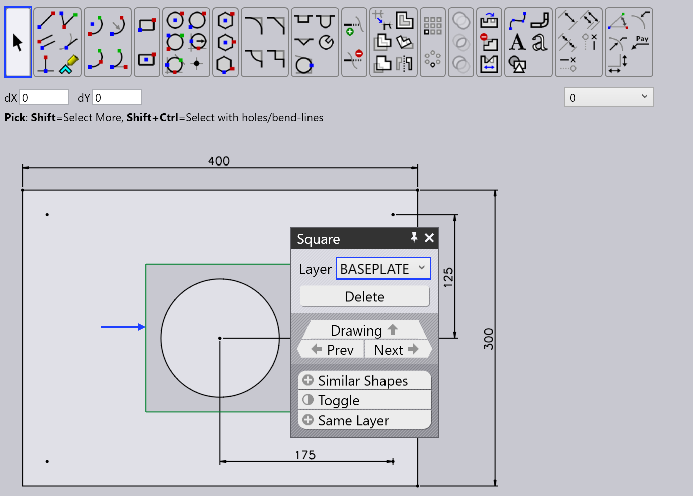

Tutucu oluşturma
Tutucunun parçayı tutma şekli bazı bükmeler arasında değiştirilmesi gerekebilir. Bükme veritabanı, otomatik bükme işlemi için kullanılabilecek çok sayıda bükme tutucu içerir. Gerekirse, ilgili parça geometrisine uyarlanmış kendi tutucularınızı oluşturmak mümkündür.
Bir tutucu oluşturmak için bilek, isteğe bağlı taban plakası, vakum plakası ve vakum kapları ile bunların ilgili konumları hakkında bilgi gereklidir.
Bu amaçla, ilgili geometri ve parametreleri içeren bir DXF dosyası oluşturulması gerekir.
Çizim modülünü kullanarak istenen vakum kaplarıyla kendi tutucu geometrinizi oluşturun.
Yeni bir tutucu oluşturmak için:
-
TecZone Bend içinde yeni bir çizim açın ve taslak seçeneğini seçin.

-
Bilek, taban plakası ve vakum kabı plakası ile tutucunun bir çizimini oluşturun (alternatif olarak, mevcut bir DXF çizimini açın ve gerektiği gibi uyarlayın).
-
Taban plakasının kontürüne farklı bir renk (örn. yeşil) uygulayın.

-
İsteğe bağlı taban plakasının doğru grafik görüntüsü için, ayrı bir katmanda olması gerekir. Taban plakası dikdörtgenini seçin ve katmanı BASEPLATE olarak seçin. Katman rengi yeşile döner.

-
Bileğin merkezinin çizim sıfır noktasında olduğundan emin olun ve parametreler için gerekli metin varlıklarını yazın.

-
Bu tutucu için ayarların çoğu, KEY=VALUE biçiminde olan metin varlıklarından gelir. İşte anlamlarıyla birlikte olası anahtarlar
anahtar Anlamı Name
Tutucunun adı
Weight
Tutucunun ağırlığı, kg cinsinden.
WRISTDIA
Bilek çapı (BM60/BM150’ye karşılık gelen 120/180 olmalıdır)
WRISTTHICKNESS
Alttaki bilek silindirinin Z kalınlığı. Bilek silindiri Z=0’dan bu değere kadar uzanır
PLATEEXTENT
Plakanın Z kapsamı (ZMIN:ZMAX biçiminde). Genellikle, ZMIN WRISTTHICKNESS ile aynı ayarlanır, böylece plaka bilek silindirinin bittiği yerden başlar.
BASEPLATEEXTENT
Taban plakasının Z kapsamı (aşağıdaki İki Katmanlı Tutucular bölümüne bakın)
CUPNAME
Bu tutucu için kullanılan vakum kabı türü (SAXM50 gibi)
CUPS
Vakum kaplarının sayısı
CUP1POS
İlk vakum kabının X,Y biçiminde konumu
CUP2POS
İkinci vakum kabının konumu
CUPNPOS
N’inci vakum kabının konumu
CUPDIA
Bir vakum kabı belirtmek için CUPNAME yerine kullanılabilir (önerilmez).
-
Çizim modülünden metin parametrelerini güncelledikten sonra aşağıda belirtilen yolun altına DXF dosyası olarak dışa aktarın.

Vakum kabı türleri
Bükme veritabanında, yeni bir tutucu yapılandırırken kullanılabilecek farklı vakum kabı türleri mevcuttur.